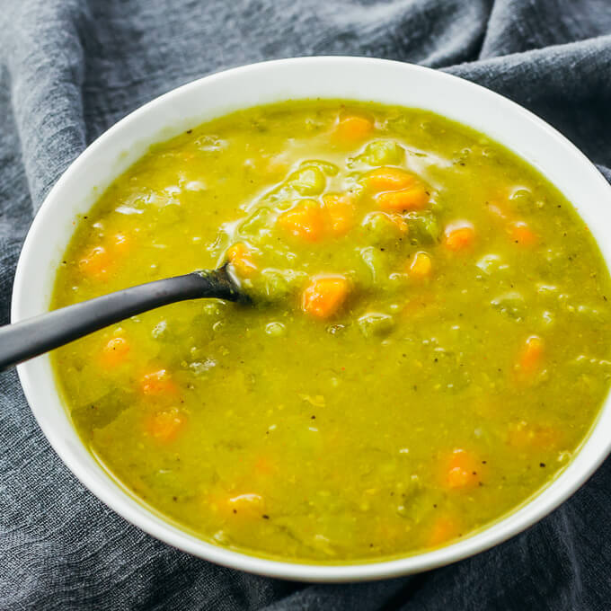

Split Pea Soup

Split Pea Soup with ham made in an Instant Pot
Ingredients
- 3 tablespoons butter
- 1 yellow onion, chopped
- 2 carrots, diced
- 2 celery ribs, diced
- 1 hambone or 6 oz diced ham
- 1 pound dry split peas, sorted and rinsed
- 6 cups stock / broth / water / mixture of choice
- 2 bay leaves
- kosher salt and black pepper, to taste
Steps
- Press the "saute" button on the Instant Pot. Once the display says "hot", melt butter and saute onion, celery, and carrots for about 5 minutes
or until softened.
- Add the split peas, stock, ham (bone or diced), and bay leaves
- Put the cover on the Instant Pot until it seals and make sure the vent is turned to "sealed". Set to "Manual", high pressure, for 15 minutes.
- Allow the pressure to naturally release for 10-15 minutes and then quick release by using tongs to turn the vent to "venting".
- If using a ham bone / hock, remove it and put the meat back into the soup. Remove the bay leaves.
- Taste, then add kosher salt and black pepper to taste.
- Serve immediately (soup will thicken as it stands). Refrigerate (for up to a week) or freeze leftovers (for up to 6 months).
Go Home